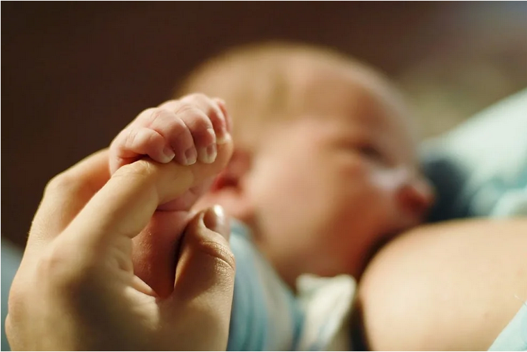

BIENESTAR
Beneficios que generan las mascotas en los niños
Un nuevo estudio indica que pasar tiempo con canes ayuda a reducir los niveles de estrés en los menores, incluso más que los ejercicios de relajación
Leer Mas
